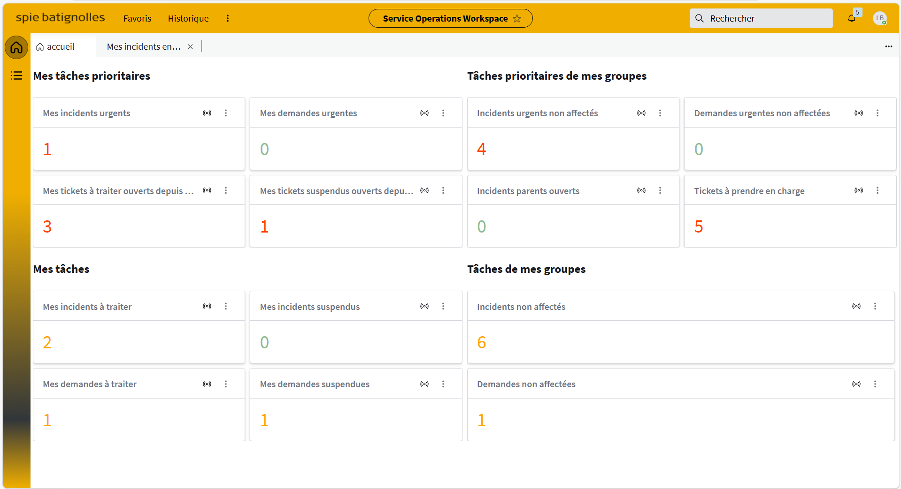
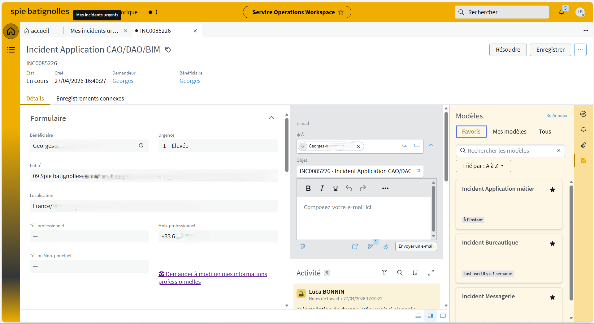
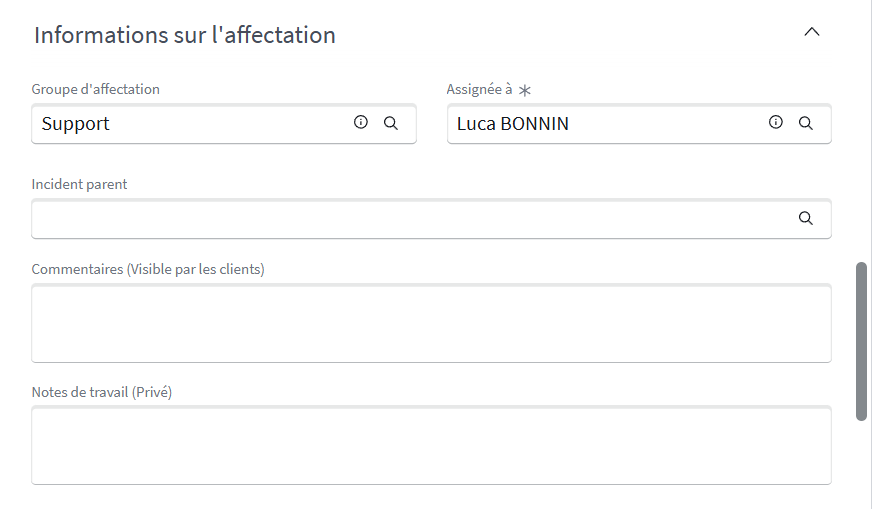

Support technique N1 — Traitement des tickets utilisateurs
Mission réalisée dans le cadre de mon alternance de technicien informatique (octobre 2024 — septembre 2026).
J'utilise ServiceNow au quotidien comme outil principal de gestion des tickets de support. Je traite les demandes et incidents remontés par les utilisateurs sur l'ensemble du territoire national, avec un rôle de support N1 : premier niveau de réponse, qualification, résolution directe ou réaffectation vers les équipes spécialisées.
Analyse des tickets entrants pour identifier la nature du problème : demande, incident, urgence.
Traitement et résolution des incidents et demandes pour lesquels je dispose des droits et compétences nécessaires.
Transmission des tickets nécessitant une intervention spécialisée vers les équipes N2 ou métiers concernées.
Échanges avec les utilisateurs pour collecter les informations nécessaires et les tenir informés du suivi.
Demande très fréquente. Avant toute action, vérification de l'identité de l'utilisateur par son matricule pour éviter toute usurpation.
Problèmes d'accès aux applications et ressources internes depuis les téléphones professionnels — généralement résolus par un reparamétrage du VPN.
Vue d'ensemble de l'outil : files de tickets, statuts, priorités et indicateurs de suivi.

🔍 Cliquer pour agrandirDétail d'un ticket utilisateur avec ses informations clés et l'historique de traitement.

🔍 Cliquer pour agrandirInformations sur l'affectation d'un ticket vers le bon groupe ou la bonne personne pour traitement.

🔍 Cliquer pour agrandir